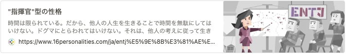
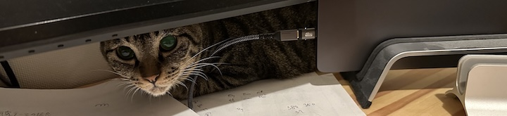

- 機械学習を専門にして博士後期課程を修了した後、自動車関連企業でデータサイエンスを応用した特殊車載システムの研究開発に携わりました。システムの根幹を構成する数々の新規技術を生み出し、その実用化に貢献しました。
- その後、複数のAI関連企業で研究開発部門のマネージャーに就き、そのマネジメントと並行して、技術戦略の立案、技術広報の企画推進、知的財産の体制強化などに携わりました。非定型な業務をプロジェクトとして推進し、多数の経営課題を解決しました。
- 現在は、個人投資家をしています。機械学習を応用した日本株の自動売買システムを個人的に開発し、これを用いた運用により資産を増やすことに成功しています。また、執筆・講演活動も行っており、資産運用、技術文書の執筆、人工知能などに関して情報発信しています。
増刷決定！
拙著の増刷が決まりました！

私が拙著で主張したいことは「適切な方法でうまく技術文書を書けるようになれば、研究開発で成果をあげられる」です。
出版元（技術評論社）のページで「はじめに」を試し読みできるので、ぜひどうぞ！
その他の出版
- 人工知能関連技術の発展に伴う特許実務の今後の変化, 日本弁理士会「パテント」, Vol.72, No.8, pp.77-85, 2019
- 人工知能エンジン「KIBIT」を用いた自然言語処理と特許調査への応用, 情報の科学と技術, Vol.67, No.7, pp.360-365, 2017
- 人工知能が支える先進医療～医療現場に人工知能を導入するヒント～, 野村ヘルスケアノート, No.17-01, 2017
- Model-based reinforcement learning for partially observable games with sampling-based state-estimation, Neural Computation, 19(11), 3051-3087, 2007
- A reinforcement learning scheme for a partially-observable multi-agent game. Machine Learning, 59, 31-54, 2005
その他、人工知能に関連する執筆多数
講演
- リクルートスタッフィング主催「トップエンジニアが実践する思考整理法～テクニカルライティングを用いた課題解決の基本」
- 日本弁理士会主催（継続研修講師）「人工知能に関連する技術・ビジネスの動向と今後の知財実務へのヒント」
- 朝日新聞社主催 AI FORUM 2018「AIの事業計画書を書くためのビジネスパーソン講座～貴社でAI事業を成功させるために必要なリテラシーとは～」
- ソフトバンクC&S主催 「AI事業の売上を決める企画・営業部隊の育成戦略」
- 技術情報協会主催「R&D部門の『働き方改革』と業務効率化、生産性向上の取り組み」
その他、人工知能／知的財産に関連する講演多数
アカウント
性格・才能
16 personalities では「指揮官（ENTJ）」です。
自分の意思と力で何かを成し遂げるプロセスを経て、達成感を得ることに生き甲斐を感じるタイプです。我が強く、自分で本当に納得しなければ絶対に人の言うことを受け入れません。逆に、自分で納得して一度決めたことは、トコトン貫く意志の強さを持っています。
目標が明確になり、その意義に納得すると、手段を選ばず達成に向かいます。いまより未熟だった若いころは、周囲の感情を考慮しないまま突き進む傾向にあったので、反感を買うこともしばしばありましたが、年を重ねて知恵をつけ、穏やかになりました。
この性格が、「場を仕切る」という私の才能（センス）を発現させました。汎用的な才能ですが、下記の３つが発動条件を満たしやすいので、非常に得意です。
- ファシリテーション
- プレゼンテーション
- クライアント折衝
つまり、「コミュニケーションを牽引する」ところにセンスの本質があり、特に「専門知識を駆使する」という条件を追加で満たせば、鮮やかに才能が現れます。
以上を踏まえてこれまでのキャリアを振り返ると、
- ビジョナリーな経営者から課題と方向性が示され、それに納得すること
- 才能の発動条件を満たしながら、その方向性に向かって課題解決に取り組むこと
スキル
- CTO 直下のマネージャとしてチームを統率・牽引した経験
- 仮説・検証を繰り返す科学的アプローチと論理的思考
- 人工知能・機械学習・データサイエンスに関する専門知識（博士号）
- 情報科学の素養とプログラミングの経験
- プロジェクトマネジメント・会議のファシリテーション
- エンジニア採用とチームビルディング（スクラムマスター）
エンジニアリング
- LAPRAS技術力スコア：3.47（上位17.27％）
- Findy スキル偏差値：73.4
- 言語・データベース・インフラ
- Python（Django / Tensorflow / Pandas / Numpy / scikit-learn 他）
- C / C++
- Matlab / R
- SQL（MySQL / Aurora / BigQuery / SQLite）
- AWS / GCP

経歴
学歴
- 大阪大学 基礎工学部 情報科学科
- 奈良先端科学技術大学院大学 博士前期課程 情報生命科学専攻
- 奈良先端科学技術大学院大学 博士後期課程 情報生命科学専攻（専門は統計的機械学習）
職歴
- 住友ゴム工業株式会社（DUNLOP）
- 株式会社FRONTEO
- 株式会社ハート・オーガナイゼーション
- 株式会社BuySell Technologies
趣味
吹奏楽
フルウィンド・管楽器アンサンブルのための作編曲、指揮・演奏指導
- 第31回朝日作曲賞に応募した作品
- 第35回朝日作曲賞に応募した作品
四柱推命
生年月日と出生時刻を教えていただければ鑑定しますので、ぜひご依頼ください（無料）
自慢のブログ記事
15分で分かる人工知能と計算機科学の歴史
南の島に思いを馳せながらコンピュータを使う
猗窩座はサウナに入ればよかったのだ〜鬼滅の刃に学ぶ現代の「至高の領域」
自慢のリモートワーク環境

この環境を紹介したブログ記事
自作した巨大机にスーパーウルトラワイドモニターをマウントしたら、サハラ砂漠のように広大な作業領域で超幸せになれた話
ニャンズ

「ほし」と「ぽぽ」という名前のネコを飼っています。２匹とも私には全然懐いていませんが、なぜかたまに私の Macbook の裏に隠れています。
連絡先
メールが最もレスポンスが早いです：hajime.fujita@gmail.com